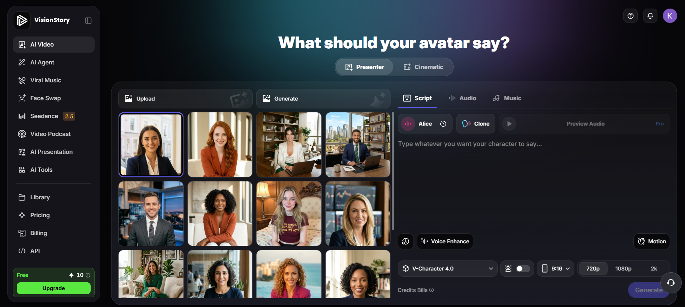
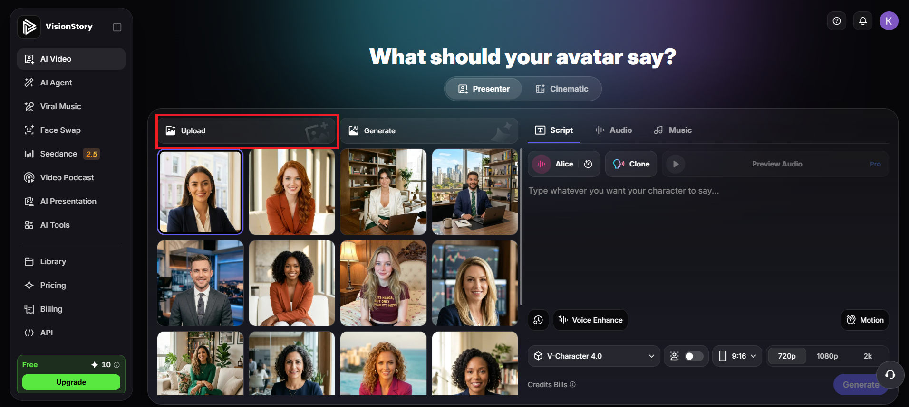
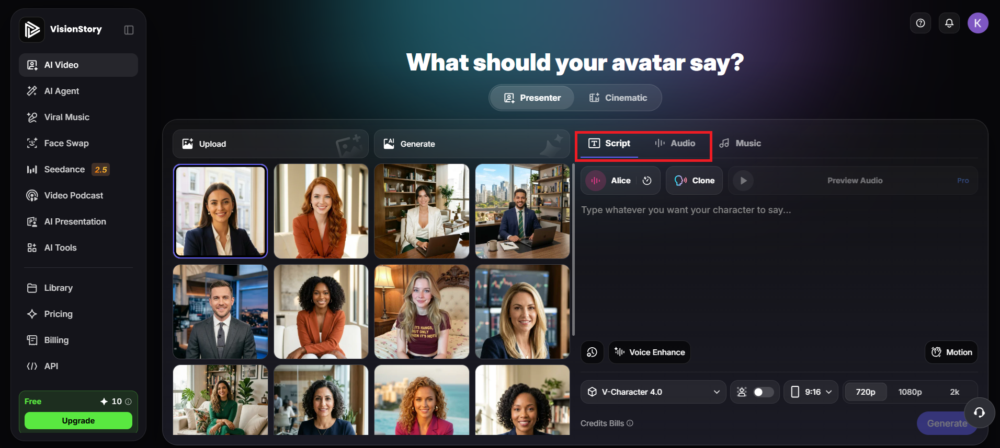

Przewodnik po platformie AI do tworzenia wideo
Innowacyjna platforma AI do błyskawicznego tworzenia wideo. Pozwala tworzyć profesjonalne materiały bez kamery i studia.
Przygotowaliśmy krótki proces krok po kroku, który pozwoli Ci rozpocząć przygodę z generowaniem wideo.
Otwórz swoją ulubioną przeglądarkę i przejdź pod jeden z poniższych adresów:
Proces logowania jest szybki i intuicyjny:

Na tym ekranie widzisz główne elementy pracy w VisionStory: wybór awatara, sceny i opcji generowania nagrania.


Po połączeniu odpowiedniego awatara, sceny i nagrania możesz szybko tworzyć profesjonalne filmy bez potrzeby kamery czy studia.